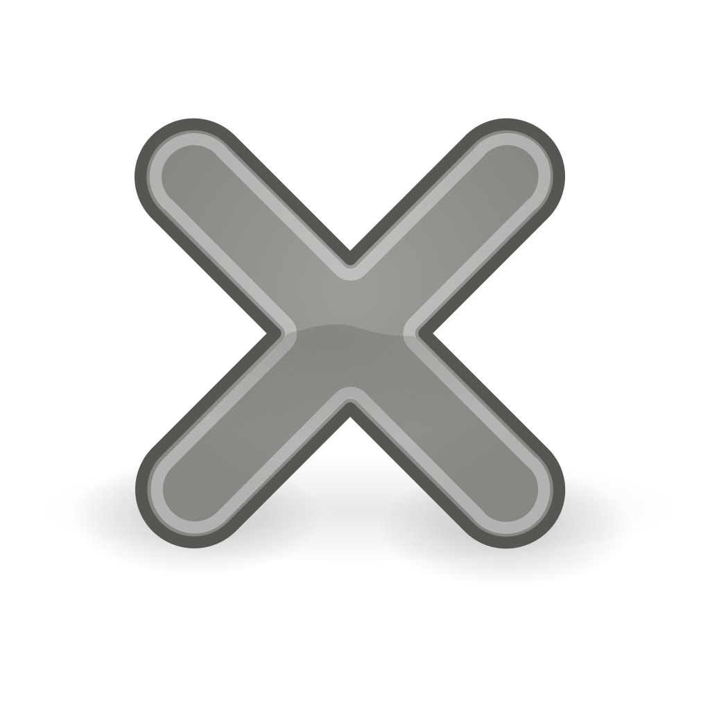

Герои силы имеют тенденцию обладать количеством здоровья и регенерацией здоровья больше чем у других героев, что делает их более выносливыми к физическим атакам и заклинаниям. Герои силы имеют большое разнообразие в ролях, включая такие как фарм, инициация и поддержка, но почти все из них имеют склонность к инициации и должны выступать в роли танков до некоторой степени. Вдобавок, герои с большим количеством силы могут значительно увеличить урон необходимый для убийства команды. За несколькими исключениями, большинство героев силы имеют ближний тип боя. Хотя герои интеллекта в основном сильны в ранней игре, а герои ловкости превосходят в поздней игре, герои силы чаще всего сбалансированы между обеими и остаются уместными на всех этапах игры.
Из-за того что герои ловкости являются единственным типом героев которые получают и урон и скорость атаки с увеличением основного атрибута, они имеют тенденцию обладать наивысшим исходным физическим уроном в процессе игры. Это позволяет им неплохо усиливаться с необходимыми предметами. Они, как правило, имеют ограниченные возможности контроля или быстрого урона; почти все их способности увеличивают их физические возможности или служат механизмами для позиционирования или побега. Это, как правило, делает их более уязвимыми и слабыми в ранней стадии игры, когда сильный контроль и быстрый урон позволяют совершать убийства, но это также значит что с хорошими предметами в инвентаре, они будут единственными кто наносит наибольшее количество урона в поздней игре, также они получают меньшее количество физического урона, так как у них высокий показатель брони. Герои ловкости имеют примерно равное распределение между ближним и дальним типом боя, и также в основном выступают в роли фарм.
По сравнению с остальными героями, герои интеллекта имеют большее количество активных способностей: как минимум по три, иногда по четыре, и реже всего - по пять. Больший запас маны и более высокая регенерация маны позволяют использовать героям свои способности чаще. В целом, герои интеллекта имеют самое большое количество способностей контроля, что делает их очень важными в команде. Предметы, которые собирают герои, как правило, основаны на заклинаниях, поэтому значительно повышают уровень интеллекта. За некоторыми исключениями, герои интеллекта имеют дальний тип боя. Так как у большинства героев интеллекта малый прирост силы на уровень, они обычно полагаются на заклинания а так же на предметы, повышающие урон от способностей. Герои интеллекта обычно реализовываются в начале и в середине игры, пока их заклинания наносят наибольший урон по отношению к здоровью противника, к концу их сила снижается. Однако, некоторые герои могут оставаться очень сильными и к концу игры. По этой причине, герои интеллекта - отлично подходят на роль поддержки или быстрого урона.
 DOTAstory
DOTAstory